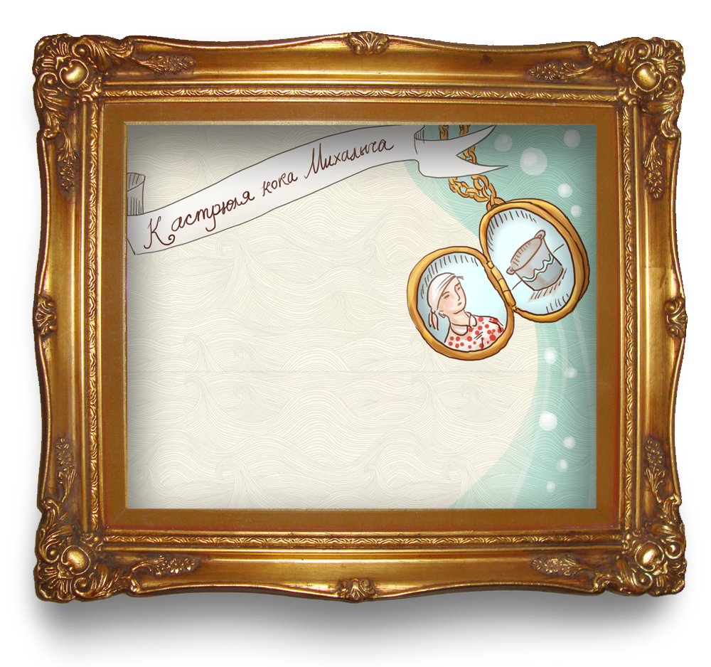
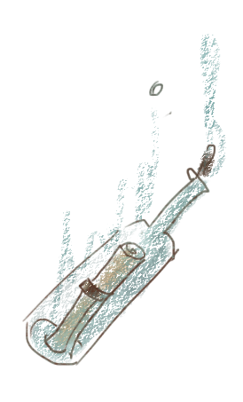

<!doctype html>
<html class="no-js" lang="en">
  <head>
    <meta charset="utf-8" />
    <meta name="viewport" content="width=device-width, initial-scale=1.0" />
    <title>Макароны по-флотски. Настоящий морской рецепт</title>
    <link rel="stylesheet" href="css/styles.css"/>
    <script src="js/jquery.js"></script>
    <link href='https://fonts.googleapis.com/css?family=Roboto+Slab:300&subset=latin,cyrillic' rel='stylesheet' type='text/css'>
  </head>
  <body>
  <div class="down"></div>
  <div id="container" class="container">
  <ul id="scene" class="scene"
  data-calibrate-x="true"
  data-calibrate-y="true"
  data-invert-x="true"
  data-invert-y="true"
  data-limit-x="false"
  data-limit-y="false"
  data-scalar-x="10"
  data-scalar-y="8"
  data-friction-x="0.1"
  data-friction-y="0.2"
  data-origin-x="0.0"
  data-origin-y="1.0">
  <li class="layer" id="lights" data-depth="0.60"></li>
  <li class="layer" id="logo" data-depth="0.50"></li>
  <li class="layer" id="sailor" data-depth="0.20"></li>
  <li class="layer" id="popup" data-depth="0.55"><div><div class="p_text vera">
  <p>По причине ли своего имени, али потому, что столь много плаваний позади, <a href="https://www.behance.net/varlamovav/" target="_blank">Вера</a> всегда
верит в положительный исход путешествия.</p></div>
<div class="p_text fedor" target="_blank"></p>
<p>Отчаянный моряк. Пережив тяжелые бури Фотошопа и не раз обогнув Пик Безье, <a href="https://www.behance.net/ltz" target="_blank">Федя</a> готов на опаснейшие кругосветки.</p></div>
</div></li>
  <li class="layer" id="clouds" data-depth="0.40"></li>
  <li class="layer" id="lighter" data-depth="0.20"></li>
  <li class="layer" id="seagull1" data-depth="1.0"></li>
  <li class="layer" id="seagull2" data-depth="1.0"></li>
  <li class="layer" id="kulon" data-depth="0.40"></li>
  <li class="layer" id="k_popup" data-depth="0.4"><div><div class="p_text kostrula"><p>
Однажды, возлюбленная кока Варя подарила Михалычу отличную эмалированную кастрюлю, в которой кок и поныне варит макароны. Легкая, красивая, в ней быстро закипает вода, потому отлично подходит для варки макарон. А еще в ней можно хранить еду в холодильнике, так как эмаль защищает ее от окисления и воздействия солей металла.
</p></div></li>
  <li class="layer" id="bottle" data-depth="0.40">
    
  </li>
  <li id="wave2" class="layer" data-depth="0.50"></li>
  <li id="wave" class="layer" data-depth="0.80"></li>
  <li id="wave3" class="layer" data-depth="0.55"></li>
  <li id="wave" class="layer" data-depth="0.70"></li>
  <li id="wave" class="layer" data-depth="0.40"></li>
  <li id="ropes" class="layer" data-depth="0.15"></li>
  <li class="layer" id="birds" data-depth="0.30"></li>
  <li class="layer" id="ingredients" data-depth="0.25"></li>
  <li class="layer" id="recipe" data-depth="0.12"></li>
  <li class="layer" id="appetite" data-depth="0.30"></li>
  <li class="layer" id="b_popup" data-depth="0.4"><div><div class="p_text"><p>
  Исконно советское блюдо, макароны по-флотски не могли быть созданы итальянскими иммигрантами 16го-17го века, да и, судя по данным советской пищевой промышленности 40х годов, не готовились на флоте и в Великую Отечественую Войну.</p>
  <p>В чем же дело?  Да в самих макаронах!</P>
  <p>Этот столь доступный продукт еще в 19м веке в Российской Империи считался деликатесом. Ведь для производства скатанных трубочек из сушеного теста необходимы специальные технологии, которые смогли стать общедоступными лишь во второй половине 20го века, после перехода советской промышленности на мирное производство.
  Далее о макаронных открытиях пишет <a href="http://www.domovest.ru/" target="_blank">domovest.ru</a></p></div></div>
  </li>
  <li id="instag" class="layer" data-depth="1">Here will go images</li>

  </ul>
  </div>

  <script src="js/parallax.js"></script>
  <script>var scene = document.getElementById('scene');
  var parallax = new Parallax(scene);</script>

  <script type="text/javascript" src="js/instafeed.min.js">
  </script>

  <script type="text/javascript">
      var feed = new Instafeed({
          get: 'tagged',
          tagName: 'awesome',
          clientId: 'YOUR_CLIENT_ID',
          template: '<a href="{{link}}"></a>'
      });
      feed.run();
  </script>

  <script>
  $('#k_popup, #b_popup').hide();

  $('#kulon').click(function() {
      $('#k_popup').toggle();
      if ($('#b_popup').is(":visible")) {
      $('#b_popup').hide();}
  });
  $('#bottle').click(function() {
      $('#b_popup').toggle();
      if ($('#k_popup').is(":visible")) {
      $('#k_popup').hide();
      }
  });
  $("#popup").click(function(){
     jQuery(this).toggleClass('active');
  });
      </script>


  </body>
</html>
